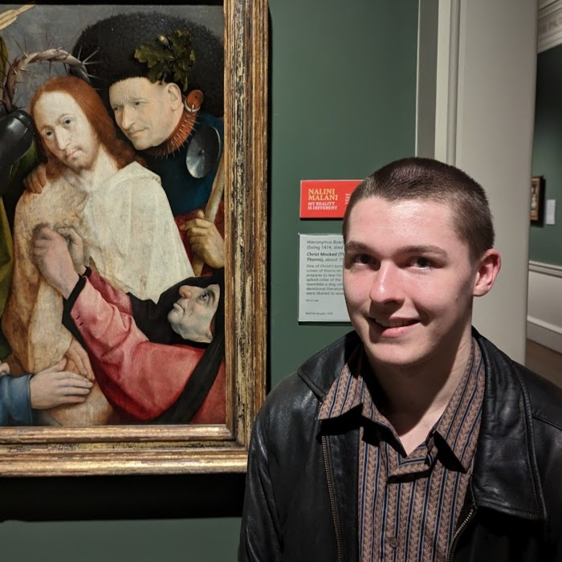

Brett Baxter
Hello, my name is Brett! I will have a B.S. in Computer Science this semester, and will be a grad student in Spring 2027 pursuing an M.S. in Computing on the Graphics & Visualization track. I specialize in graphics programming, and am interested in working in the games industry on game engines! My contributions to ABC3D include: user interaction (on-screen gizmos, controls), rendering (reference images, stylized shaders), and I am responsible for "Simple Mode".
My hobbies include reading, film, and game development. My favorite authors are: Yukio Mishima, Franz Kafka, Stanislaw Lem, and Thomas Pynchon. My favorite movies are: Mishima (1985), Pat Garrett & Billy the Kid (1973), The Color of Money (1986), and Stroszek (1977). I think game development is very fun but have never made a full game (many such cases). If you'd like to talk, or have any questions about my work, please reach out!